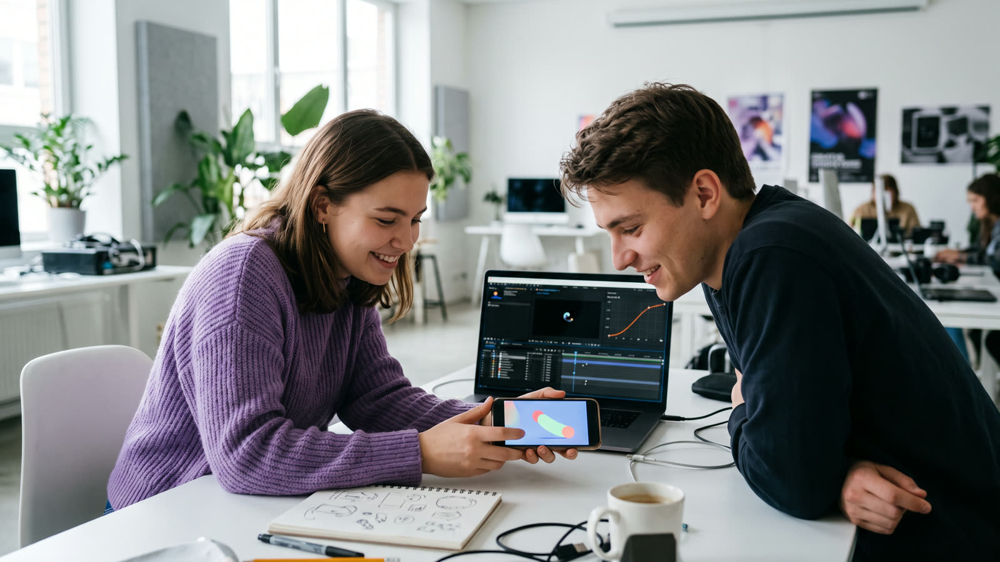
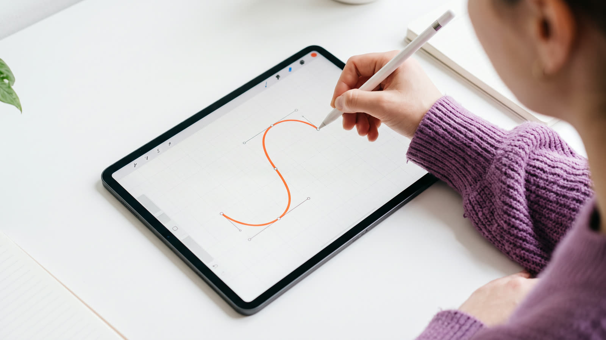
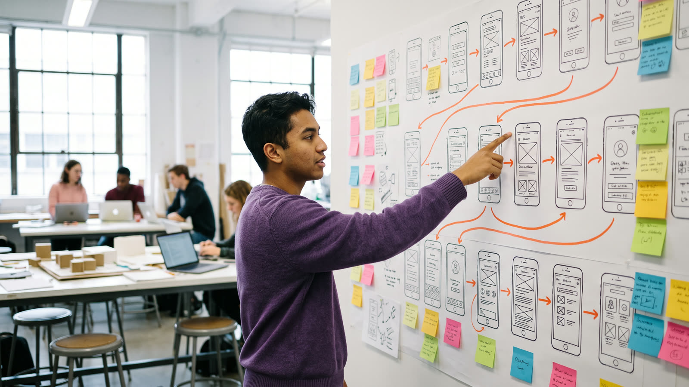
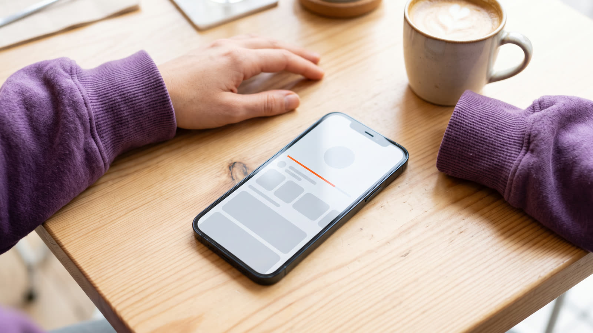
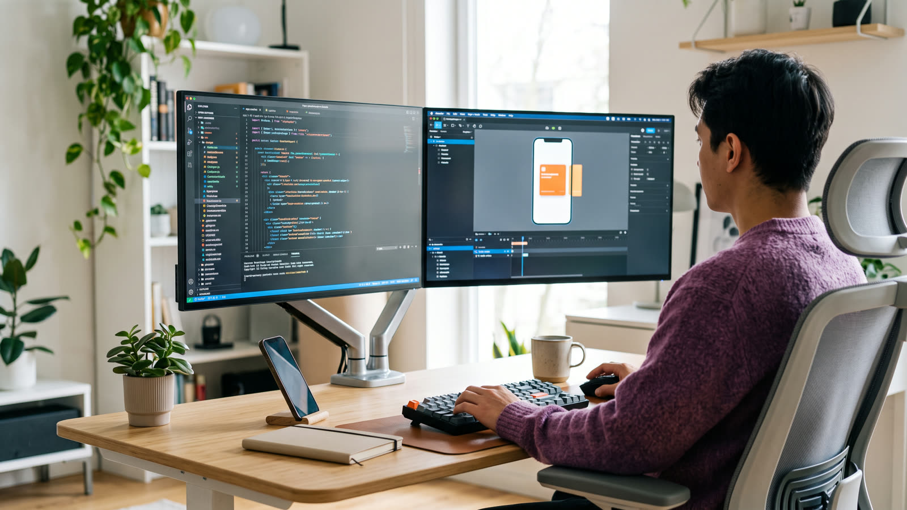
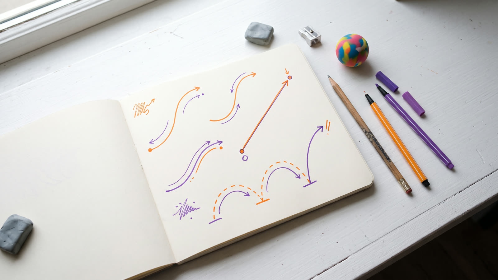
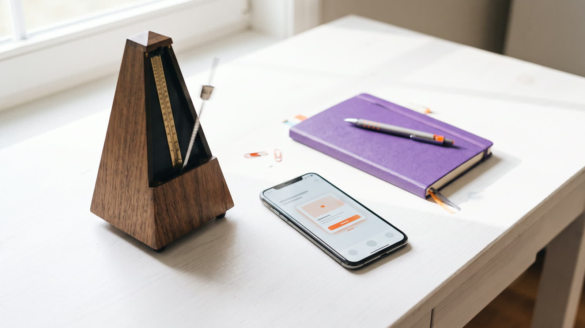
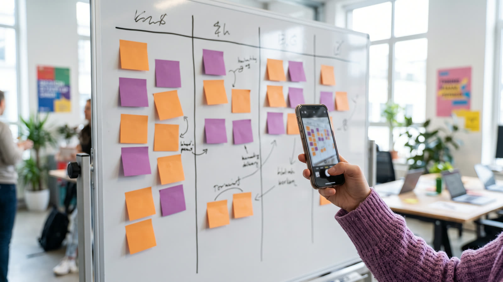
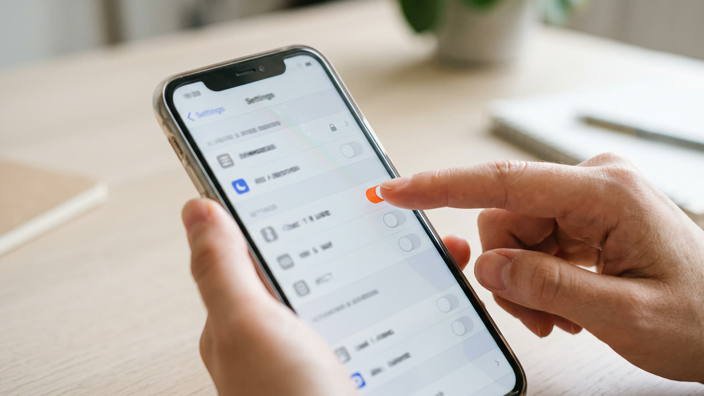

Lernmodul 06 · Studiengang Medieninformatik
UX & Animation
Bewegung ist Teil der Oberfläche. Gut gemacht zeigt sie, was gerade passiert, woher ein Element kommt und ob eine Eingabe angekommen ist. Schlecht gemacht kostet sie Zeit, lenkt ab oder macht Menschen sogar schwindelig. Dieses Modul zeigt, wie Sie Animation in Apps und Websites gezielt einsetzen: mit Timing, Easing, Mikrointeraktionen, Übergängen, Rücksicht auf reduzierte Bewegung und sauberer Übergabe an die Entwicklung. Alle Beispiele können Sie direkt ausprobieren und verändern.
Reduzierte Bewegung ist auf Ihrem Gerät eingeschaltet. Das Video bleibt stehen, und alle Beispiele laufen nur, wenn Sie sie selbst starten.
Grundlagen & Gestaltung
Kapitel 01–10Übungen
Zuordnen · Timen · Zerlegen · SpezifizierenWissen
Test · Literatur · RegisterWarum sich Oberflächen bewegen
Auf dem Bildschirm verschwindet nichts einfach so und taucht nichts aus dem Nichts auf, jedenfalls nicht in einer guten App. Bewegung verbindet zwei Zustände und erklärt, was dazwischen passiert ist. Damit ist Animation ein Werkzeug der User Experience und kein Schmuck.

Ausprobieren: Mit und ohne Bewegung
Fügen Sie der Einkaufsliste einen Eintrag hinzu und löschen Sie einen. Schalten Sie dann die Animation ab und wiederholen Sie es. Achten Sie darauf, ob Sie noch erkennen, was sich verändert hat.
Tippen Sie auf das × neben einem Eintrag, um ihn zu löschen.
Ohne Animation springt die Liste. Das Auge muss neu suchen, was dazugekommen oder verschwunden ist. Mit Animation sieht man es: Der neue Eintrag schiebt die anderen sanft nach unten, der gelöschte fällt weg und die Lücke schließt sich. Das ist der Kern dieses Moduls.
Begriffe
UI-Animation
Jede zeitliche Veränderung einer Oberfläche: Position, Größe, Farbe, Deckkraft oder Form ändern sich über eine bestimmte Dauer mit einem bestimmten Verlauf (Easing).
Motion Design
Die Gestaltungsdisziplin dahinter: Sie legt fest, was sich wann, wie schnell und warum bewegt, und sorgt dafür, dass alle Bewegungen einer App zusammenpassen.
Mikrointeraktion
Ein kleiner, abgeschlossener Moment mit einer einzigen Aufgabe: einen Schalter umlegen, etwas merken, eine Liste aktualisieren (Kapitel 06).
Übergang (Transition)
Die Bewegung zwischen zwei Zuständen oder Screens, zum Beispiel von der Liste in die Detailansicht (Kapitel 07).
Zum Nachlesen: Grundbegriffe wie Usability, Heuristiken und die Laws of UX finden Sie im Lernmodul 04 · UX-Grundlagen. Wie Sie Ihre Animationen mit echten Menschen testen, zeigt das Lernmodul 05 · UX & Evaluation.
Lernziele
Nach Bearbeitung des Moduls können Sie …
- für jede Animation begründen, welche Aufgabe sie für die Nutzenden erfüllt,
- die klassischen Animationsprinzipien auf Bedienoberflächen übertragen,
- Dauer und Easing passend zu Größe, Weg und Richtung einer Bewegung wählen,
- Mikrointeraktionen mit dem Modell nach Dan Saffer entwerfen und beschreiben,
- Übergänge zwischen Screens räumlich schlüssig und gestaffelt gestalten,
- Wartezeiten mit Fortschrittsanzeigen und Skeleton Screens kürzer wirken lassen,
- Bewegung barrierefrei gestalten und „reduzierte Bewegung“ berücksichtigen,
- Animationen performant umsetzen und als Spezifikation an die Entwicklung übergeben.
So arbeiten Sie mit dem Modul
Jedes Kapitel hat Beispiele, die Sie starten und verändern können. Ändern Sie Werte ruhig, bis es „falsch“ aussieht. So lernen Sie die Grenzen kennen.
Sechs Übungen vom Easing-Zuordnen bis zum Reduced-Motion-Check. Jede endet mit „Als erledigt markieren“.
In Übung 6 schreiben Sie eine Motion-Spezifikation für Ihr eigenes Projekt und laden sie als PDF oder Markdown herunter.
Hinweis: Ihr Gerät meldet „reduzierte Bewegung“. Die Beispiele starten deshalb nie von selbst, sondern nur auf Ihren Klick. Sie sind für das Verständnis dieses Moduls notwendig.
Wozu Animation?
Jede Bewegung in einer Oberfläche braucht einen Grund. Die gute Nachricht: Es gibt nur eine Handvoll Gründe. Wenn Sie keinen davon nennen können, lassen Sie die Animation weg.
Sechs Aufgaben von Bewegung
Starten Sie die Beispiele einzeln. Jedes zeigt eine Aufgabe, die Animation in einer Oberfläche übernehmen kann.
Die Kontrollfrage
„Würde jemand etwas vermissen oder sich schlechter zurechtfinden, wenn diese Animation fehlt?“
Lautet die Antwort „nein“, ist die Animation Dekoration. Dekoration ist nicht verboten, aber sie muss kurz sein, darf nichts verzögern und muss sich abschalten lassen.
Wann Sie nicht animieren sollten
Bei häufigen Aktionen
Was Menschen hundertmal am Tag tun, etwa eine Mail archivieren, muss sofort reagieren. Eine schöne Animation nervt beim zehnten Mal.
Wenn sie Inhalte zurückhält
Eine Intro-Animation, nach der erst der Inhalt erscheint, ist reine Wartezeit. Inhalte sollten sofort nutzbar sein, Bewegung läuft daneben.
In Dauerschleife
Was sich ständig bewegt, zieht ständig Aufmerksamkeit ab, gerade von Menschen mit Konzentrationsschwierigkeiten. Und es verbraucht Akku.
Bei Texteingaben
Während jemand tippt, sollte sich nichts in der Nähe des Eingabefelds bewegen außer der Rückmeldung zur Eingabe selbst.
Animationsprinzipien
1981 beschrieben die Disney-Animatoren Frank Thomas und Ollie Johnston in „The Illusion of Life“ zwölf Prinzipien, mit denen gezeichnete Figuren lebendig wirken. Viele davon gelten auch für Buttons, Karten und Screens, weil unser Gehirn Bewegung immer mit der Physik der echten Welt vergleicht.
Ausprobieren: Ein Ball mit und ohne Prinzipien
Der Ball springt von links nach rechts. Schalten Sie die Prinzipien einzeln zu und vergleichen Sie. Mit allen Prinzipien wirkt der Ball schwer und lebendig, ohne sie wie ein Diagramm.
Die zwölf Prinzipien im Interface
| Prinzip | Bedeutung | Im Interface | Relevanz |
|---|---|---|---|
| Stauchen und Strecken Squash and Stretch | Ein Körper verformt sich beim Aufprall und bei schneller Bewegung, das Volumen bleibt gleich. | Elastischer Button beim Drücken, Gummiband-Effekt am Listenende. | mittel |
| Vorbereitung Anticipation | Vor einer Bewegung holt die Figur kurz aus. | Ein Element zieht sich leicht zusammen, bevor es wegfliegt. Hinweis auf eine Wischgeste. | mittel |
| Inszenierung Staging | Eine Handlung zur Zeit, klar erkennbar inszeniert. | Beim Dialog wird der Hintergrund abgedunkelt, nur das Wichtige bewegt sich. | hoch |
| Durchanimieren und Schlüsselposen Straight Ahead and Pose to Pose | Bild für Bild zeichnen oder Schlüsselposen festlegen und dazwischen ergänzen. | In UI-Tools fast immer Schlüsselposen: Start- und Endzustand plus Übergang. | mittel |
| Nachschwingen und Überlappen Follow Through and Overlapping Action | Teile einer Figur kommen nicht gleichzeitig zum Stehen. | Leichtes Nachfedern, gestaffelt einlaufende Listenelemente (Kapitel 07). | hoch |
| Beschleunigen und Abbremsen Slow In and Slow Out | Bewegungen beginnen und enden langsamer. | Easing: das wichtigste Prinzip überhaupt (Kapitel 05). | sehr hoch |
| Bögen Arcs | Natürliche Bewegungen verlaufen auf Bögen statt auf Geraden. | Ein Artikel fliegt im Bogen in den Warenkorb. | mittel |
| Nebenbewegung Secondary Action | Eine kleinere Bewegung unterstützt die Hauptbewegung. | Das Pfeil-Icon dreht sich, während sich ein Bereich aufklappt. | mittel |
| Timing | Die Zahl der Bilder bestimmt Gewicht, Stimmung und Charakter. | Dauer in Millisekunden (Kapitel 04). | sehr hoch |
| Übertreibung Exaggeration | Bewegung wird überzeichnet, damit sie deutlich wird. | Ein Passwortfeld schüttelt sich bei falscher Eingabe. Sparsam einsetzen. | gering |
| Räumliches Zeichnen Solid Drawing | Figuren haben Volumen, Gewicht und Perspektive. | Ein schlüssiges Ebenenmodell: Was oben liegt, wirft Schatten und bewegt sich über anderem. | mittel |
| Ausstrahlung Appeal | Die Figur ist angenehm anzusehen und hat Charakter. | Eine eigene Motion-Persönlichkeit, passend zur Marke: ruhig, verspielt, präzise. | mittel |
Schon 1993 haben Bay-Wei Chang und David Ungar gezeigt, dass sich diese Prinzipien auf Benutzungsoberflächen übertragen lassen. Ihr Argument: Wenn Objekte sich glaubwürdig bewegen, verstehen Menschen leichter, was sie sind und wo sie hingehören.
Timing und Dauer
Zu schnell, und niemand sieht, was passiert ist. Zu langsam, und die App fühlt sich zäh an. Die meisten Interface-Animationen liegen zwischen 100 und 500 Millisekunden. Wo genau, hängt von Größe, Weg und Bedeutung der Bewegung ab.
Drei Zeitgrenzen der Wahrnehmung
Jakob Nielsen hat 1993 drei Grenzen für Antwortzeiten zusammengefasst. Sie helfen auch bei Animationen:
Unmittelbar
Bis hier wirkt eine Reaktion wie direkte Manipulation. Rückmeldung auf einen Tipp sollte in dieser Zeit beginnen.
Gedankenfluss
Die Person merkt die Verzögerung, bleibt aber bei der Sache. Keine Animation sollte die Bedienung länger blockieren.
Aufmerksamkeit
Danach wenden sich Menschen ab. Längere Vorgänge brauchen eine Fortschrittsanzeige (Kapitel 08).
Ausprobieren: Drei Dauern im Vergleich
Dieselbe Karte, derselbe Weg, dreimal unterschiedlich lang. Stellen Sie in der vierten Bahn Ihre eigene Dauer ein.
Richtwerte
| Art der Bewegung | Beispiel | Dauer |
|---|---|---|
| Rückmeldung, kleine Zustandsänderung | Button drücken, Schalter, Häkchen | 100–200 ms |
| Kleines Element erscheint oder verschwindet | Tooltip, Snackbar, Menü | 150–250 ms |
| Mittlere Fläche bewegt sich | Bottom Sheet, Akkordeon, Dialog | 250–400 ms |
| Großer Übergang über den ganzen Screen | Seitenwechsel, Karte wird zur Detailansicht | 300–500 ms |
Weg und Größe
Je größer die Fläche und je länger der Weg, desto mehr Zeit braucht die Bewegung, damit sie nicht ruckartig wirkt. Auf dem Tablet dürfen Übergänge darum etwas länger sein als auf dem Smartphone, auf der Smartwatch kürzer.
Rein langsamer als raus
Was erscheint, braucht Zeit, um wahrgenommen zu werden. Was verschwindet, hat seine Aufgabe erfüllt: Ausblenden darf kürzer sein als Einblenden, oft um ein Viertel bis ein Drittel.
Design-Tokens statt Einzelwerte: Material Design 3 legt Dauern als Stufen fest: short (50–200 ms), medium (250–400 ms), long (450–600 ms) und extra-long (700–1000 ms). Wer Stufen statt beliebiger Zahlen verwendet, bekommt eine App, deren Bewegungen zusammenpassen.
Bilder pro Sekunde
Ein Display mit 60 Hz zeigt alle 16,7 Millisekunden ein neues Bild, eines mit 120 Hz alle 8,3 Millisekunden. Eine Animation von 200 ms besteht auf einem 60-Hz-Display also aus nur 12 Bildern. Fällt eines aus, weil der Browser zu beschäftigt ist, sieht man ein Ruckeln. Wie Sie das vermeiden, zeigt Kapitel 10.
Easing und Federn
Nichts in der echten Welt startet sofort mit voller Geschwindigkeit und stoppt schlagartig. Easing beschreibt, wie sich die Geschwindigkeit während einer Animation verändert. Es entscheidet mehr über das Gefühl einer Bewegung als die Dauer.

Die vier Grundformen
Faustregel: Was hereinkommt, bremst ab (ease-out). Was hinausgeht, beschleunigt (ease-in). Was sich innerhalb des Screens bewegt, macht beides (ease-in-out). Linear bleibt für Dinge ohne Masse: Fortschrittsbalken, Drehungen eines Ladesymbols, Farbverläufe.
Ausprobieren: Der Kurven-Editor
Eine Kurve cubic-bezier(x1, y1, x2, y2) verläuft immer von (0, 0) nach (1, 1). Die waagerechte Achse ist die Zeit, die senkrechte der Fortschritt. Ziehen Sie die beiden Anfasser oder geben Sie Werte ein. Werte für y über 1 oder unter 0 erzeugen ein Überschwingen.
Oben Ihre Kurve, unten zum Vergleich linear.
Easing in Design-Systemen
| Name | Werte | Einsatz |
|---|---|---|
| CSS ease | 0.25, 0.1, 0.25, 1 | Voreinstellung im Browser, wenn nichts angegeben ist |
| CSS ease-in-out | 0.42, 0, 0.58, 1 | Symmetrisch, wirkt oft etwas träge |
| Material 3 Standard | 0.2, 0, 0, 1 | Die meisten Bewegungen innerhalb eines Screens |
| Material 3 Emphasized Decelerate | 0.05, 0.7, 0.1, 1 | Betonte Elemente, die hereinkommen |
| Material 3 Emphasized Accelerate | 0.3, 0, 0.8, 0.15 | Betonte Elemente, die hinausgehen |
Material Design 3 beschreibt die betonte Kurve eigentlich als zusammengesetzten Pfad. Die Werte oben sind die gängigen Annäherungen für CSS. Neuere Versionen von Material setzen zunehmend auf Federn.
Federn statt Kurven
Eine Feder (Spring) beschreibt Bewegung physikalisch mit Steifigkeit, Dämpfung und Masse. Die Dauer ergibt sich daraus von selbst. Der große Vorteil: Eine Feder lässt sich mitten in der Bewegung umlenken und übernimmt dabei die aktuelle Geschwindigkeit. Wird ein Bottom Sheet beim Schließen wieder angefasst, springt es nicht, sondern folgt dem Finger. SwiftUI und Jetpack Compose verwenden darum standardmäßig Federn.
In CSS gibt es keine echten Federn. Mit der Funktion linear(), die alle aktuellen Browser unterstützen, lässt sich eine Feder aber als Folge von Punkten annähern. Der Knopf oben erzeugt genau diesen Code.
Mikrointeraktionen
Ein Herz antippen, einen Schalter umlegen, ein Passwort eingeben: Mikrointeraktionen sind die kleinen Momente, aus denen eine App zum größten Teil besteht. Dan Saffer hat 2013 ein einfaches Modell beschrieben, mit dem man sie bewusst gestalten kann.
Das Modell nach Saffer
- 01
Auslöser (Trigger)
Was startet die Mikrointeraktion? Entweder die Person (ein Tipp, eine Geste) oder das System (eine neue Nachricht, ein niedriger Akkustand).
- 02
Regeln
Was passiert, und was darf passieren? Die Regeln sind unsichtbar, bestimmen aber das Verhalten: ab wann geladen wird, was bei Fehlern geschieht.
- 03
Rückmeldung (Feedback)
Wie erfährt die Person, was passiert? Hier kommt Animation ins Spiel, zusammen mit Farbe, Text, Ton und Vibration.
- 04
Schleifen und Modi
Was passiert bei Wiederholung, nach längerer Zeit oder in Sonderfällen? Etwa ein Hinweis, der nach dem dritten Mal nicht mehr kommt, oder ein Offline-Modus.
Ausprobieren: Drei Mikrointeraktionen, zerlegt
Bedienen Sie die drei Elemente. Rechts daneben sehen Sie, welcher Teil des Modells gerade aktiv ist.
Gute Rückmeldung
Sofort beginnen
Die Rückmeldung startet innerhalb von 100 ms nach dem Tipp, auch wenn das Ergebnis noch auf den Server wartet.
Am Ort des Geschehens
Feedback erscheint dort, wo die Person hinschaut: am Button, nicht in einer Ecke des Screens.
Angemessen stark
Ein „Gefällt mir“ darf hüpfen. Eine Überweisung sollte ruhig und eindeutig bestätigt werden.
Nicht nur Bewegung
Zustände werden auch durch Farbe, Form oder Text erkennbar. Wer Bewegung abgeschaltet hat oder nicht sieht, muss trotzdem wissen, was passiert ist.
Übergänge und Choreografie
Ein Übergang erklärt, wie zwei Screens zusammenhängen: Liegt der neue Screen „darunter“, „daneben“ oder „darüber“? Wenn alle Übergänge einer App demselben räumlichen Modell folgen, finden sich Menschen schneller zurecht.

Vier Übergangsmuster
Material Design beschreibt vier Muster, die sich auch auf iOS und im Web bewähren:
Container-Transformation
Ein Element wächst zum neuen Screen, etwa eine Karte zur Detailansicht. Zeigt: „Das hier ist dasselbe, nur größer.“
Gemeinsame Achse
Beide Screens bewegen sich entlang derselben Achse, etwa beim Vor und Zurück in einem Assistenten oder zwischen Tabs.
Durchblenden
Der alte Inhalt blendet aus, der neue blendet leicht vergrößert ein. Für Screens ohne direkten Zusammenhang, etwa in der Tab-Leiste.
Einblenden
Ein Element erscheint innerhalb des Screens: ein Dialog, ein Menü, eine Snackbar.
Ausprobieren: Liste und Detailansicht
Wählen Sie ein Muster und tippen Sie auf eine Karte. Mit „Zurück“ läuft der Übergang rückwärts. Achten Sie darauf, ob Sie wissen, wo Sie sind.
Choreografie: Wer bewegt sich zuerst?
Bewegen sich viele Elemente gleichzeitig, weiß das Auge nicht, wohin. Choreografie legt eine Reihenfolge fest: Das wichtigste Element führt, die anderen folgen mit kurzem Versatz (Staggering). Üblich sind 20 bis 50 ms pro Element. Die gesamte Folge sollte trotzdem nicht viel länger als eine halbe Sekunde dauern. Bei langen Listen staffelt man darum nur die ersten Einträge.
Übergänge im Web: View Transitions
Mit der View Transition API kann der Browser zwischen zwei Zuständen einer Seite selbst einen Übergang erzeugen. Er fotografiert den alten Zustand, führt Ihre Änderung aus und blendet zum neuen über. Elemente mit demselben view-transition-name werden dabei wie bei der Container-Transformation ineinander überführt.
// Zustand ändern und den Browser animieren lassen
if (document.startViewTransition) {
document.startViewTransition(() => zeigeDetail(id));
} else {
zeigeDetail(id); // ältere Browser: ohne Übergang
}
/* CSS: Bild in Liste und Detail gehört zusammen */
.karte-bild, .detail-bild { view-transition-name: produktbild; }Übergänge innerhalb einer Seite unterstützen Chrome, Edge, Safari ab Version 18 und Firefox ab Version 144. Übergänge zwischen zwei Seiten (Cross-Document) gibt es in Chrome ab 126 und Safari ab 18.2. Ein Fallback ohne Übergang ist darum Pflicht.
Laden und Wartezeiten
Wartezeit lässt sich nicht immer verkürzen. Wie lang sie sich anfühlt, schon. Gute Ladeanimationen zeigen, dass etwas passiert, wie lange es noch dauert und was gleich kommt.

Welche Anzeige wann?
| Wartezeit | Anzeige | Warum |
|---|---|---|
| unter 1 s | Keine eigene Ladeanzeige, nur Rückmeldung am Button | Ein Spinner, der kurz aufblitzt, wirkt unruhiger als gar keiner. |
| 1–3 s | Skeleton Screen oder dezenter Indikator | Die Person sieht, dass etwas kommt und wo es erscheinen wird. |
| 3–10 s | Fortschrittsbalken, wenn der Fortschritt bekannt ist | Ein sich füllender Balken lässt sich besser einschätzen als ein drehendes Symbol. |
| über 10 s | Fortschritt mit Prozent oder Restzeit, Abbrechen möglich | Nach Nielsen wenden sich Menschen jetzt anderen Dingen zu und wollen wissen, wann sie zurückkommen sollen. |
Ausprobieren: Dreimal drei Sekunden
Alle drei Varianten laden genau gleich lang. Starten Sie sie und achten Sie darauf, welche sich am kürzesten anfühlt.
Die meisten empfinden den Skeleton Screen als am schnellsten: Er zeigt sofort die Struktur, und der Inhalt füllt sie nur noch auf. Der Begriff stammt von Luke Wroblewski (2013). Wichtig ist, dass die Platzhalter wirklich der Form des Inhalts entsprechen. Ein Schimmer-Effekt sollte langsam und blass sein.
Optimistische Oberfläche
Manche Aktionen gelingen fast immer, etwa ein „Gefällt mir“. Eine optimistische Oberfläche zeigt das Ergebnis darum sofort und schickt die Anfrage im Hintergrund. Nur wenn der Server einen Fehler meldet, wird die Änderung sichtbar zurückgenommen und erklärt.
Tricks, die tatsächlich wirken
Fortschritt, der zum Ende hin schneller wird
Chris Harrison und Kollegen haben 2010 gezeigt, dass Balken, die gegen Ende beschleunigen, als kürzer empfunden werden als gleichmäßige.
Schrittweise anzeigen
Was schon da ist, wird sofort gezeigt: zuerst Text, dann Bilder in niedriger Auflösung, dann scharf.
Vorausladen
Was die Person wahrscheinlich als Nächstes öffnet, kann schon geladen werden, während sie noch liest.
Ehrlich bleiben
Ein Balken, der bei 99 % stehen bleibt, zerstört das Vertrauen. Lieber einen unbestimmten Indikator als einen falschen Prozentwert.
Barrierefreie Bewegung
Für viele Menschen ist Bewegung auf dem Bildschirm mehr als eine Geschmacksfrage. Große Bewegungen, Zoom und Parallax-Effekte können Schwindel, Übelkeit oder Migräne auslösen, etwa bei Störungen des Gleichgewichtssinns. Dauerbewegung erschwert Menschen mit Konzentrationsschwierigkeiten das Lesen.
Was die WCAG verlangen
| Kriterium | Stufe | Inhalt |
|---|---|---|
| 2.2.2 Pausieren, beenden, ausblenden | A | Bewegt sich etwas automatisch länger als fünf Sekunden neben anderem Inhalt, etwa ein Karussell oder Hintergrundvideo, muss es sich anhalten oder ausblenden lassen. |
| 2.3.1 Grenzwert von dreimaligem Blitzen | A | Nichts darf öfter als dreimal pro Sekunde aufblitzen. Blitze können epileptische Anfälle auslösen. |
| 2.3.3 Animation durch Interaktionen | AAA | Bewegungen, die durch eine Interaktion ausgelöst werden, lassen sich abschalten, außer sie sind für die Funktion notwendig. |
Kriterium 2.3.3 ist zwar nur Stufe AAA, lässt sich aber mit einer einzigen Systemabfrage erfüllen: Jedes Betriebssystem hat eine Einstellung für reduzierte Bewegung, und Apps wie Websites können sie auslesen. Seit dem 28. Juni 2025 gilt in Deutschland zudem das Barrierefreiheitsstärkungsgesetz (BFSG) für viele Apps und Online-Shops. Mehr dazu im Lernmodul 05.
Reduzieren heißt nicht entfernen
Große Bewegungen wie Schieben, Zoomen oder Drehen werden zur kurzen Überblendung. Der Zustandswechsel bleibt sichtbar.
Parallax, Hintergrundvideos, Dauerschleifen und rein dekorative Effekte fallen weg oder werden zum Standbild.
Farbwechsel, kleine Rückmeldungen und Fortschrittsanzeigen bleiben. Sie bewegen wenig und tragen Information.
Ausprobieren: Derselbe Übergang, zweimal
Umsetzung
/* CSS: Standard ist Bewegung, bei Bedarf reduzieren */
@media (prefers-reduced-motion: reduce) {
.seite-neu { animation: einblenden 150ms ease-out; } /* statt Schieben */
.parallax { transform: none; }
}
// JavaScript: Einstellung abfragen und auf Änderungen hören
const reduziert = matchMedia('(prefers-reduced-motion: reduce)');
reduziert.addEventListener('change', () => passeAnimationenAn(reduziert.matches));iOS
Einstellung „Bewegung reduzieren“. In SwiftUI über @Environment(\.accessibilityReduceMotion), in UIKit über UIAccessibility.isReduceMotionEnabled.
Android
Einstellung „Animationen entfernen“. Sie setzt den Systemwert ANIMATOR_DURATION_SCALE auf 0. Viele Standardanimationen reagieren darauf automatisch, eigene sollten ihn abfragen.
Auch ohne Systemeinstellung: Bieten Sie bei auffälligen Effekten eine eigene Option in der App an. Nicht alle Betroffenen kennen die Systemeinstellung, und manche wollen Bewegung nur in einer bestimmten App reduzieren.
Umsetzung und Übergabe
Eine Animation ist erst gut, wenn sie auf dem Gerät flüssig läuft und genau so gebaut wird, wie sie gestaltet wurde. Dafür brauchen Sie zwei Dinge: Wissen darüber, was sich günstig animieren lässt, und eine Spezifikation, die keine Fragen offenlässt.

Was sich günstig animieren lässt
Der Browser berechnet jedes Bild in Schritten: Stil, Layout (Größen und Positionen), Paint (Pixel zeichnen) und Composite (Ebenen zusammensetzen). Ändern Sie width, height, top oder left, muss für jedes Bild das Layout neu berechnet werden. transform und opacity dagegen kann die Grafikkarte allein erledigen, auch wenn das Programm gerade beschäftigt ist. Native Plattformen funktionieren ähnlich.
Mit Belastung blockiert ein Skript den Hauptthread regelmäßig für 150 ms. Die obere Kugel wird über left bewegt und ruckelt, die untere über transform und läuft in den meisten Browsern weiter flüssig.
FLIP-Technik
Soll sich ein Element in Größe oder Position ändern, ändert man das Layout sofort und animiert nur den Unterschied mit transform: First, Last, Invert, Play. Paul Lewis hat das 2015 beschrieben. Die Einkaufsliste in Kapitel 01 funktioniert so.
Sparsam mit will-change
will-change: transform bereitet eine eigene Ebene vor. Für wenige, gleich startende Animationen hilfreich, auf vielen Elementen dauerhaft gesetzt kostet es Speicher.
Werkzeuge
| Bereich | Werkzeuge | Wofür |
|---|---|---|
| Prototyping | Figma (Smart Animate), ProtoPie | Übergänge und Mikrointeraktionen zeigen und testen, bevor Code entsteht |
| Web | CSS Transitions und Animations, Web Animations API, View Transitions, Bibliotheken wie GSAP oder Motion | Vom einfachen Hover bis zur gesteuerten Sequenz |
| Nativ | SwiftUI (withAnimation), Jetpack Compose (animate*AsState), Flutter (AnimatedContainer) | Plattformtypische Bewegungen und Federn |
| Illustrierte Animation | Lottie (aus After Effects), Rive | Icons, Leerzustände, Onboarding, interaktive Figuren |
Die Motion-Spezifikation
„Es soll irgendwie weich reinkommen“ führt zu fünf verschiedenen Umsetzungen. Eine Spezifikation beschreibt jede Animation so genau, dass sie ohne Rückfrage gebaut werden kann. Dazu gehören Tokens für Dauer und Easing, die die ganze App verwendet.
| Element und Auslöser | Eigenschaft | Von → Nach | Dauer | Easing | Reduzierte Bewegung |
|---|---|---|---|---|---|
| Bottom Sheet, Tipp auf „Filter“ | translateY | 100 % → 0 | medium (300 ms) | decelerate | Einblenden 150 ms |
| Hintergrund dahinter | opacity | 0 → 0,4 | medium (300 ms) | standard | unverändert |
| Bottom Sheet schließen | translateY | 0 → 100 % | short (200 ms) | accelerate | Ausblenden 100 ms |
In Übung 6 erstellen Sie eine solche Spezifikation für Ihr eigenes Projekt.
Testen nicht vergessen: Ob eine Animation hilft, zeigt sich erst mit echten Nutzenden. Beobachten Sie in Usability-Tests, ob Menschen nach einem Übergang wissen, wo sie sind. Wie Sie solche Tests planen, zeigt das Lernmodul 05 · UX & Evaluation.
Easing zuordnen
Fünf Bewegungen aus einer Shopping-App brauchen die passende Easing-Kurve. Wählen Sie für jede eine Kurve und sehen Sie sich das Ergebnis in der Vorschau an.

Ordnen Sie jeder Situation eine Kurve zu. Mit „Vorschau“ sehen Sie die Bewegung mit der gewählten Kurve. Bestanden ist die Übung bei mindestens vier richtigen Zuordnungen.
Dauer einstellen
Fünf Animationen sind alle gleich lang eingestellt, auf eine träge Sekunde. Stellen Sie für jede eine passende Dauer ein.

Stellen Sie die Regler so ein, dass jede Animation zu ihrer Aufgabe passt, und prüfen Sie sie in der Vorschau. Bestanden ist die Übung, wenn mindestens vier Dauern im empfohlenen Bereich liegen.
Sinnvoll oder Deko?
Sechs Animationen aus verschiedenen Apps. Spielen Sie jede ab und entscheiden Sie, welche Aufgabe sie erfüllt, oder ob sie nur schmückt und dabei stört.
Wählen Sie für jedes Beispiel den Hauptzweck. Bestanden ist die Übung bei mindestens fünf richtigen Antworten.
Mikrointeraktion zerlegen
Ziehen zum Aktualisieren (Pull to Refresh) kennt jede und jeder aus Nachrichten- und Mail-Apps. Probieren Sie die Geste aus und zerlegen Sie sie dann mit dem Modell nach Saffer.

Ausprobieren
Ziehen Sie die Liste mit der Maus oder dem Finger nach unten und lassen Sie los. Mit der Tastatur: Fokus auf die Liste und Pfeil nach unten gedrückt halten.
Ordnen Sie jede Aussage einem Teil des Modells zu. Bestanden ist die Übung bei mindestens sechs von acht richtigen Zuordnungen.
Reduced-Motion-Check
Eine Reise-App soll „reduzierte Bewegung“ respektieren. Entscheiden Sie für sieben Animationen, was bei eingeschalteter Einstellung mit ihnen passieren soll.

Wählen Sie für jede Animation „Behalten“, „Durch Überblendung ersetzen“ oder „Entfernen“. Bestanden ist die Übung bei mindestens sechs von sieben richtigen Entscheidungen.
Motion-Spezifikation
Jetzt für Ihr eigenes Projekt: Legen Sie die Bewegungssprache Ihrer App fest und beschreiben Sie drei wichtige Animationen so, dass Ihr Team sie ohne Rückfrage bauen kann. Die Eingaben bleiben in diesem Browser gespeichert.
Füllen Sie die Grundlagen und drei Animationen aus. Mit „Spezifikation prüfen“ erhalten Sie Hinweise. Ist alles vollständig und stimmig, gilt die Übung als erledigt.
Wissenstest
Fünfzehn Fragen quer durch das Modul. Nach jeder Frage erhalten Sie eine kurze Erklärung.
Literatur
Grundlagenwerke, Studien und Richtlinien zu Animation und Motion Design im Interface, chronologisch geordnet.
Stichwortverzeichnis
Alle Fachbegriffe des Moduls, kurz erklärt und mit Verweis auf das passende Kapitel.